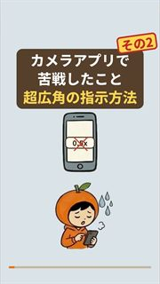
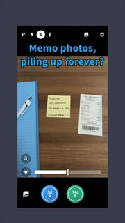
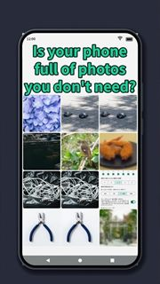

Najit

ナジトです。小さな困りごとを、アプリにしています。（Najit の中の人）
つくったアプリ / Apps
ナジトの開発日記
動画を、順番とテーマで整理しています。サムネイルを押すと、このページの中で再生します（押すまで、YouTubeへの接続はしません）。
ナジトの開発日記（はじまりから）
アプリ開発を始めたきっかけから、つまずいたことまで。上から順に見ると、話がつながります。
3
カメラアプリで苦戦したこと、その1:超広角にならない【ナジトの開発日記】
超広角にならない端末があった、という話。

4
カメラアプリで苦戦したこと、その2:超広角の指示方法は「0.5x」じゃなかった【ナジトの開発日記】
その1の続き。指示の出し方が違っていた、という話。
開発ツールの小技
個人開発で使っているツールの、体験ベースの小技。
アプリの紹介（日本語）
4つのアプリを、それぞれ短く紹介した動画と、まとめて紹介した動画。
English videos
Short videos in English.

1
Do your memo photos pile up forever? | ForNow Cam #Shorts
ForNow Cam is the English name of Karidori Camera.

2
Delete the photos you don't need in a snap | Bit by Bit #Shorts
Bit by Bit is the English name of Komame Clean.
Najit は「なじむ・ジャスト・フィット」から。使う人になじむ、ちょうどいいアプリを目指しています。
これまでのトップページはこちらに残しています。
Najit makes apps that fit the way you use them — small, simple, and just right.